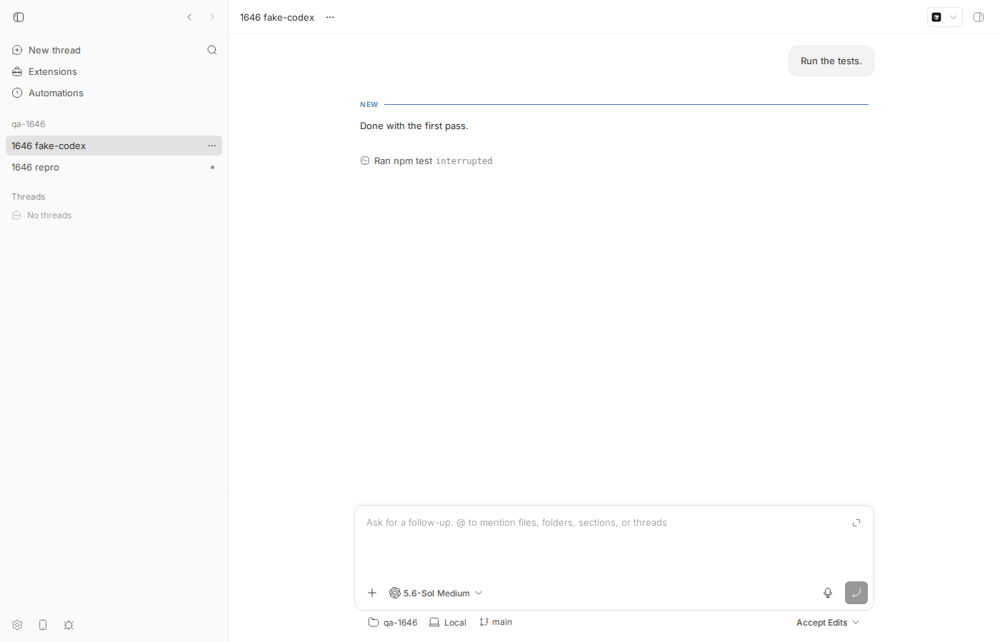
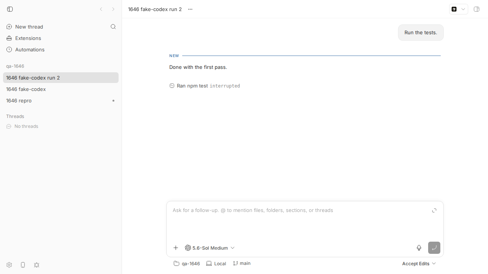
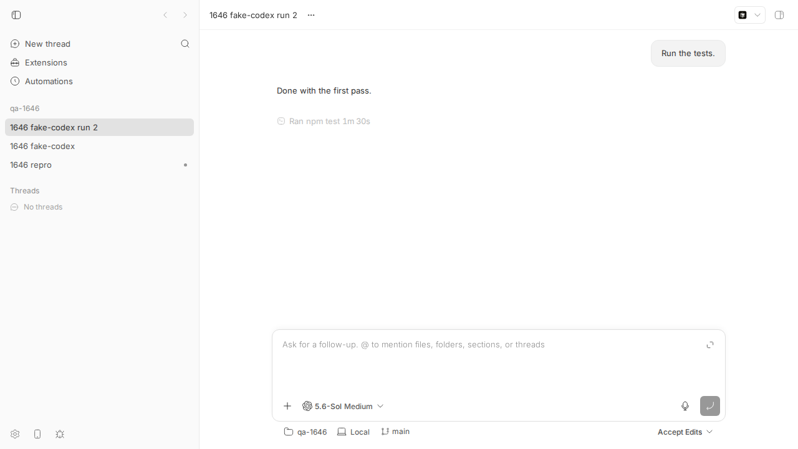
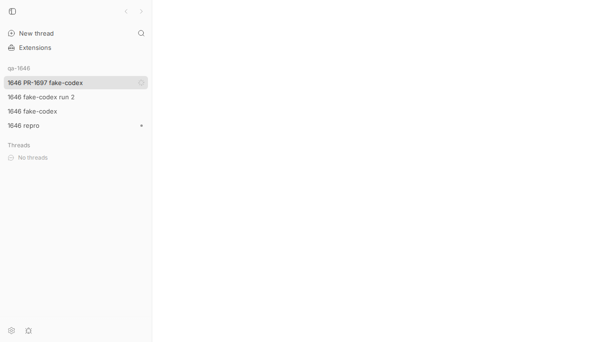

#1646 · Codex thread shows idle (no spinner) while actively running commands
turn/started/turn/completed; root work that arrives afterwards on an already-started turn is stored but changes nothing). Low for why Codex emits work on a turn it already completed — that provider-side trigger could not be reproduced with the real Codex CLI 0.147.0 and is unverified.turn/completed" the PR relies on, so a reactivated thread stays active forever (verified live: thread stuck active until manually stopped).1. TL;DR
The user watches a Codex agent run commands, but the sidebar shows no spinner, bb thread list says idle, and bb thread wait returns immediately. bb decides whether a thread is "active" only from two provider events: the root turn/started (→ active) and the root turn/completed (→ idle). Once the provider has said turn/completed for turn X, any further item/started (commands, file changes, messages) that still carry turn X are accepted and stored — the store only requires that turn X was started at some point — but nothing in the server, daemon, or app treats that work as evidence of activity. So the thread sits at idle while the transcript fills with commands (which the app even labels interrupted). Why Codex keeps working on a completed turn (the reporter suspects hook/compaction auto-continuation) is not established here; the bb-side blind spot is, and it is provider-agnostic. Since #1640 the daemon additionally drops any second turn/completed for the same turn silently, which both hides the reporter's "closing" event on current main and breaks the linked fix.
2. Claims vs findings
| Claim (issue) | Status | Evidence |
|---|---|---|
Thread executes commands (item/started commandExecution etc.) while bb thread list --json reports status: idle, displayStatus: idle, all activity counters 0. | Verified | Live repro on main: thread-list-during-gap.json captured while npm test item was open; event log thread-log-fake-run2.txt; unit test issue-1646-idle-while-working.test.ts fails on main with expected 'idle' to be 'active'. |
| Sidebar shows no spinner / no unread dot during the gap. | Verified (spinner) | screenshot: no spinner next to the thread while the command item is open. Unread-dot behaviour not separately exercised. |
| Daemon-side state, not a rendering issue. | Verified (server-side, actually) | The status the app renders is the server's threads.status; it is set only in applyEventEffects for root turn events (see §6). The daemon's RuntimeTurnState has the same blind spot (no active turn → thread/stop becomes a session release that kills the child instead of turn/interrupt). |
bb thread wait <id> (default --status idle) returns early while the agent is still working. | Verified | During the gap: Thread thr_sptb2snhdz reached status idle. returned in 2 s while the command item was still open (§5 step 6). |
Codex continued work after turn/completed; a later turn/completed arrived with "no matching turn/started". | Unverified (provider side) | bb rejects (HTTP 409) any turn-scoped event whose turn has no stored turn/started (control test in the repro file), so the idle-gap items and the closing turn/completed necessarily reused a previously started turn id — most likely the just-completed one. That Codex 0.14x itself does this could not be reproduced: in the Codex source (main @ 2026-08-17) Stop hooks and mid-turn auto-compaction run inside run_turn before TurnComplete, and mailbox continuations open a new turn id. The reporter's Codex version is not stated. |
Interleaving with hook/started/hook/completed traffic may be involved. | Unverified | bb translates those to provider/unhandled (orphan-droppable, no status effect). No code path in bb derives turn boundaries from hook events. Plausible only as a marker that Codex opened a new turn (userPromptSubmit hooks fire at turn start). |
| Two turn/started (22:01:42, 22:08:12) before one turn/completed (22:11:19) and the final turn/completed at 22:19:02 is an "invariant violation". | Partly refuted as stated | Codex native sub-agent turns and bb's delegation-link logic can put additional turn/started/turn/completed pairs (with parentToolCallId) into the same thread log; a sequential pairing of turn events is not a valid invariant. Without the raw log the pairing cannot be settled. On current main a second completion of the same turn would not even be stored (dropped by the intake grammar, §6.3). |
{kind=link}
3. Environment
| bb | main 16ceb3a54 (desktop-v0.38.0 + 30 commits); reporter was on 0.38.0 where the codex adapter still lived in packages/agent-runtime/src/codex/ (moved to plugins/provider-codex by #1640) — the status logic in apps/server/src/internal/events.ts is unchanged between the two. |
| OS / Node | Linux 7.0.0-29-generic x86_64 · Node v24.18.0 · pnpm 9.15.0 |
| Codex CLI | codex-cli 0.147.0 at ~/.local/bin/codex (used for the first, real thread; then replaced by a scripted codex app-server stand-in via a PATH shim, see §5) |
| Dev instance | scripts/bb-dev-app current — App http://localhost:17807, Server http://localhost:25807, Host daemon 127.0.0.1:33807, data dir ~/.bb-dev/projects-bb-.claude-worktrees-wf_debcf606-e4a-10-500e3e97251e, host host_7d2bgczsdj, project proj_nf3d8y6thb (scratch repo /tmp/bb-1646-repo) |
| Threads | thr_i85f4gnwdy (real codex, control), thr_sptb2snhdz and thr_tgeuxbrznq (fake codex, main), thr_the993iykf (fake codex, PR #1697 merged onto main) |
4. Minimal reproduction
4a. Unit level (fails on main in ~3 s)
- Copy
issue-1646-idle-while-working.test.tstoapps/server/test/internal/. - Run:
cd apps/server && pnpm exec vitest run test/internal/issue-1646-idle-while-working.test.ts
- Expected: both tests pass. Actual on main (vitest-main.txt):
FAIL test/internal/issue-1646-idle-while-working.test.ts > issue #1646: provider keeps working after turn/completed > thread stays idle while root commandExecution items stream on the completed turn AssertionError: expected 'idle' to be 'active' // Object.is equality Expected: "active" Received: "idle" ❯ test/internal/issue-1646-idle-while-working.test.ts:129:56 Test Files 1 failed (1) Tests 1 failed | 1 passed (2)The passing "control" test shows the 409 for work on a never-started turn, which is why the reporter's idle-gap items must have reused a started turn id.
/**
* Repro for get-bb/bb#1646 ... On main (16ceb3a54) the assertion
* `expect(status).toBe("active")` FAILS with "idle". On PR #1697 it passes.
*/
import { getThread } from "@bb/db";
import { turnScope } from "@bb/domain";
import { groupHostDaemonEvents, type HostDaemonEventEnvelope } from "@bb/host-daemon-contract";
import { describe, expect, it } from "vitest";
import { internalAuthHeaders } from "../helpers/commands.js";
import { seedEnvironment, seedHostSession, seedProjectWithSource, seedThread } from "../helpers/seed.js";
import { createTestAppHarness } from "../helpers/test-app.js";
async function setup() {
const harness = await createTestAppHarness();
const { host, session } = seedHostSession(harness.deps, {});
const { project } = seedProjectWithSource(harness.deps, { hostId: host.id });
const environment = seedEnvironment(harness.deps, { hostId: host.id, projectId: project.id });
const thread = seedThread(harness.deps, { projectId: project.id, environmentId: environment.id, status: "active" });
const post = (events: HostDaemonEventEnvelope[]) =>
harness.app.request("/internal/session/events", {
method: "POST",
headers: internalAuthHeaders(harness),
body: JSON.stringify({ sessionId: session.id, eventGroups: groupHostDaemonEvents(events) }),
});
return { harness, thread, post };
}
const PROVIDER_THREAD_ID = "codex-thread-1646";
function turnStarted(threadId: string, turnId: string): HostDaemonEventEnvelope {
return { threadId, event: { type: "turn/started", threadId, providerThreadId: PROVIDER_THREAD_ID, scope: turnScope(turnId) } };
}
function turnCompleted(threadId: string, turnId: string): HostDaemonEventEnvelope {
return { threadId, event: { type: "turn/completed", threadId, providerThreadId: PROVIDER_THREAD_ID, scope: turnScope(turnId), status: "completed" } };
}
function commandStarted(threadId: string, turnId: string, id: string, command: string): HostDaemonEventEnvelope {
return { threadId, event: { type: "item/started", threadId, providerThreadId: PROVIDER_THREAD_ID, scope: turnScope(turnId),
item: { type: "commandExecution", id, command, cwd: "/repo", status: "pending", approvalStatus: null } } };
}
describe("issue #1646: provider keeps working after turn/completed", () => {
it("thread stays idle while root commandExecution items stream on the completed turn", async () => {
const { harness, thread, post } = await setup();
try {
let res = await post([turnStarted(thread.id, "turn-X"), turnCompleted(thread.id, "turn-X")]);
expect(res.status).toBe(200);
expect(getThread(harness.db, thread.id)?.status).toBe("idle");
// work resumes on the SAME turn id: accepted (200) because turn-X was started
res = await post([
commandStarted(thread.id, "turn-X", "cmd-1", "npm test"),
commandStarted(thread.id, "turn-X", "cmd-2", "rtk npm run typecheck"),
]);
expect(res.status).toBe(200);
// BUG: the thread is executing commands but reports idle.
expect(getThread(harness.db, thread.id)?.status).toBe("active");
} finally { await harness.cleanup(); }
});
it("control: work scoped to a never-started turn is rejected with 409, so the idle-gap items must have used a started turn id", async () => {
const { harness, thread, post } = await setup();
try {
const res = await post([commandStarted(thread.id, "turn-never-started", "cmd-1", "npm test")]);
expect(res.status).toBe(409);
} finally { await harness.cleanup(); }
});
});
4b. End to end (real bridge, daemon, server, CLI and app) with a scripted Codex app-server
The codex bridge spawns codex app-server from PATH. The host daemon replaces its PATH with the one reported by the user's login shell ($SHELL -ilc), so a plain PATH prefix is not enough; the recipe below therefore also wraps $SHELL. Every other codex invocation still goes to the real binary. The scripted server replays the reported shape: turn/started → agent message → turn/completed → 12 s pause → reasoning + commandExecution npm test on the same turn id → long pause → command completes, agent message, second turn/completed.
- Files: fake-codex-app-server.mjs, script-1646.json, codex-shim.sh, shell-wrapper-bash.sh, poll-status.sh.
mkdir -p /tmp/bb-1646/bin /tmp/bb-1646/shell /tmp/bb-1646-repo cp codex-shim.sh /tmp/bb-1646/bin/codex; chmod +x /tmp/bb-1646/bin/codex ln -sf "$(dirname "$(which node)")"/{node,npm,npx} /tmp/bb-1646/bin/ cp shell-wrapper-bash.sh /tmp/bb-1646/shell/bash; chmod +x /tmp/bb-1646/shell/bash (cd /tmp/bb-1646-repo && git init -q && echo '# qa' > README.md && git add . && git -c user.email=qa@x -c user.name=qa commit -qm init) - Start the dev instance with the shim first on PATH and the wrapped login shell:
SHELL=/tmp/bb-1646/shell/bash BB_DEV_NODE_BIN_DIR=/tmp/bb-1646/bin scripts/bb-dev-app current eval "$(scripts/bb-dev-app env)"
- Create a project and spawn a codex thread:
curl -s -X POST $BB_SERVER_URL/api/v1/projects -H 'content-type: application/json' \ -d '{"name":"qa-1646","source":{"type":"local_path","path":"/tmp/bb-1646-repo","hostId":"<host id from bb machine list>"}}' pnpm bb:dev thread spawn --project <proj id> --provider codex --permission-mode accept-edits \ --title "1646 fake-codex" --prompt "Run the tests." --json # → thr_sptb2snhdz - Poll status:
poll-status.sh $BB_SERVER_URL thr_… 3 50. Expected:activefrom ~12 s after the first completion until the second completion. Actual (poll-fake-run2.log): idle for the entire run —05:05:59 status=idle displayStatus=idle 05:06:08 status=idle displayStatus=idle <- item/started commandExecution "npm test" was stored at 05:06:07.080 05:06:20 status=idle displayStatus=idle … (50/50 samples idle)
- Event log while idle (thread-log-fake-run2.txt) — the work is stored on the completed turn:
6 05:05:55.077 turn/started btbbd39d79-1-turn-X 11 05:05:55.099 turn/completed btbbd39d79-1-turn-X turnStatus=completed 12 05:06:07.080 item/started btbbd39d79-1-turn-X reasoning 14 05:06:07.080 item/started btbbd39d79-1-turn-X commandExecution "npm test" status=pending 15 05:06:07.080 item/commandExecution/outputDelta btbbd39d79-1-turn-X 16 05:07:37.110 item/completed btbbd39d79-1-turn-X commandExecution "npm test" status=completed 19 05:07:37.110 item/completed btbbd39d79-1-turn-X agentMessage (no seq 20: the second turn/completed sent by the provider was dropped by the daemon, see §6.3)
- CLI during the gap (run 1,
thr_sptb2snhdz): thread list shows"status":"idle","displayStatus":"idle", all activity counters 0; and$ pnpm bb:dev thread wait thr_sptb2snhdz # 04:58:22, command item open since 04:57:01 Thread thr_sptb2snhdz reached status idle. # returned after 2 s

npm test command is rendered as interrupted — the timeline assumes an unfinished item on a completed turn was cut off. Composer is in the idle "Ask for a follow-up" state.
thr_tgeuxbrznq) 05:06:27, inside the gap: same picture — no spinner, command "interrupted".
turn/completed never reached the server.5. Root cause
5.1 Thread status is derived only from root turn lifecycle events
apps/server/src/internal/events.ts#L379-L460 (applyEventEffects): turn/started (root, no stop before it, no run already started) applies run.started; turn/completed goes through applyTurnCompletedEvent which, if the turn's stored turn/started was a root start, applies the completion lifecycle → idle. No other event type touches threads.status. In particular there is no branch for item/started.
5.2 Late work on a completed turn is accepted, then ignored
The store guard resolveDaemonTurnStartDisposition only asks "was turn/started ever stored for (thread, turnId)?". A completed turn satisfies that, so item/started/deltas/item/completed for it are inserted (this is exactly what the reporter's log shows: dozens of stored items after turn/completed). Nothing downstream re-evaluates status from stored items: displayStatus, the sidebar spinner and bb thread wait all read threads.status.
5.3 The daemon has the same blind spot, and (on current main) silently drops the closing event
RuntimeTurnState.observeclears the active turn onturn/completedand never re-arms it. ConsequentlystopThreadseesactiveTurnId === null, and the codex bridge turns thatthread/stopinto a release that kills the app-server child (observed live in run 1: my scripted server died at thebb thread stop; noturn/completed {interrupted}was produced). So "stop" works by killing the process, not byturn/interrupt.- Since #1640 the daemon runs every incoming provider event through
ThreadEventGrammarand drops violations. A secondturn/completedfor a turn that already completed violatesturn/settles-onceand is dropped; the reasoning items and commands on that turn are not violations and pass. The drop message goes tooptions.onStderr, which the host daemon ignores unless it is a mock-CLI marker — so the loss is invisible in logs. Documented by issue-1646-grammar-drops-second-completion.test.ts (output). This is why seq 20 is missing in §4b step 5, and it is what breaks PR #1697 (§7).
5.4 Provider side (open)
What makes Codex stream root work under a turn id it already closed is not established. Facts: (1) it must be the same or an earlier started turn id, otherwise bb answers 409 and the daemon retries the batch (nothing would have been stored); (2) the bridge/adapter passes Codex's turnId through unchanged (0.38.0) or with a deterministic per-session prefix (HEAD), so bb does not invent or collapse turn ids; (3) in Codex main (2026-08-17) both Stop-hook continuation and mid-turn auto-compaction happen inside run_turn before TurnComplete is emitted, and mailbox-triggered continuations (async hooks, sub-agent messages) start a new sub_id/turn/started; (4) the twice-observed exactly-12-second gap between turn/completed and resumed work smells like a fixed timer/hook rather than model latency. Settling this needs the reporter's raw bb thread log --json (turn ids of the idle-gap items and of the 22:19:02 completion) plus their codex --version and hooks config.
6. Proposed fix (first principles)
- Server: treat root work as activity, but settle it explicitly. In
applyEventEffects, on a rootitem/startedfor a turn with a storedturn/completed, an idle thread, and no user stop since that turn's request, applyrun.started(this is what #1697 does). Because a secondturn/completedis not a reliable settle signal (grammar drops it; a provider may never send it), also settle when the reopened work itself settles: onitem/completedfor the last open root item of a reopened turn (no other open root items on that turn), apply the idle lifecycle again. Track "reopened" turns so a stale item on an old turn cannot leave a thread active forever. - Daemon: do not drop the settle signal blindly. Either (a) let
ThreadEventGrammarallow a re-completion of a turn that has been reopened by root work (i.e. move the turn back tostartedTurnIdswhen rootitem/startedarrives after completion — mirroring the reactivation), or (b) keep dropping it but make the daemon log grammar drops at warn level so this class of provider anomaly is visible. (a) is preferable; (b) is needed regardless. - Daemon
RuntimeTurnState: reopen the active turn on rootitem/startedafter completion (as #1697 does) sothread/stopsendsturn/interruptinstead of releasing the session, and clear it when the reopened work settles or a completion for that turn arrives. - Observability: log (server warn) whenever root work arrives on a completed turn, with provider id, turn id and item type — this would have made the reporter's case diagnosable and will show which Codex versions/features trigger it.
Risks: an item on a long-dead turn (delayed child output, replayed history) could flip a thread active; guard with "no newer root turn has started since" and settle on item completion. Any change to event shapes is server/daemon-internal here — no wire change, no HOST_DAEMON_PROTOCOL_VERSION bump needed unless the grammar rule change is expressed as a new event field.
7. PR review — #1697 "Reactivate threads when a provider resumes work on a completed turn"
What it changes. Server: on root item/started for a turn with a stored turn/completed, thread idle, and no system/thread/interrupted since that turn's client/turn/requested, apply run.started. Domain: shared isTurnReopeningWorkItem (excludes userMessage, backgroundTask, parented items). Daemon: RuntimeTurnState reopens the active turn on such work; runtime.ts marks the provider session not idle. Tests for reactivation, stop-then-late-completion, stopped thread. Base: ba4265453 (before #1640).
Does it address the root cause? Half. It correctly stops deriving activity from turn events alone. But it settles the reactivated thread only via "the next turn/completed", and on current main that event is dropped at daemon intake (§5.3). Verified live on pr-1697 merged onto 16ceb3a54 (only conflict: the PR's test file still contains tests for RuntimeTurnReplayFilter, a class #1640 deleted; resolved by removing that describe block):
$ poll-status.sh … thr_the993iykf 3 40 # PR branch, same scripted provider (poll-pr1697.log) 05:18:43 status=idle displayStatus=idle # after first turn/completed 05:18:49 status=active displayStatus=active # item/started reactivated the thread (good) 05:19:29 provider: item/completed cmd, agentMessage, turn/completed turn-X (2nd) -> dropped by daemon grammar 05:20:35 status=active displayStatus=active # still active 65 s after the provider went quiet $ pnpm bb:dev thread wait thr_the993iykf --timeout 15 Error: Timed out waiting for thread thr_the993iykf to reach status idle. $ pnpm bb:dev thread stop thr_the993iykf # only a manual stop returns it to idle Thread thr_the993iykf stopped → status=idle

Findings
| Sev | Where | Finding |
|---|---|---|
| High | apps/server/src/internal/events.ts (new item/started branch, ~L414-431) + packages/agent-runtime/src/runtime-turn-state.ts reopen block | Relies on a second turn/completed for the same turn to settle. On main since #1640 the daemon drops that event (turn/settles-once) — reactivated threads stay active indefinitely (spinner forever, bb thread wait never returns, provider session never idle-reaped because markProviderSessionNotIdle was called and the runtime holds an active turn). Regression is strictly worse than the bug for orchestration. Needs a settle path independent of the duplicate completion (settle on the reopened work's completion, and/or grammar allowance for re-completion of a reopened turn). |
| High | PR base / merge | Based on ba4265453; conflicts with main in runtime-turn-state.test.ts (references deleted RuntimeTurnReplayFilter) and was never exercised against the intake grammar. Must be rebased and re-verified end to end. |
| Med | events.ts resolveReopenedTurnId | Any root item on any previously completed turn reactivates the thread as long as no stop happened since that turn's request — including a stale item on an old turn after a newer turn already ran and completed. Combined with the missing settle path this leaves the thread active with no provider event able to close it. Guard should require that no newer root turn started after the reopened one, or settle on item completion. |
| Med | PR description | "thread/stop was a no-op" is inaccurate: with no active turn the daemon releases the session, which for codex kills the app-server child (observed). The PR's daemon change does change stop from "kill" to "interrupt", which is an improvement, but the description misstates the before-state. |
| Low | events.ts | getThread() is now executed for every root item/started on every thread (before the idle check). Cheap, but it is a new per-item DB read on the hottest event path; reorder so it runs only when needed or memoize per batch. |
| Low | tests | No test covers "reactivated, then the provider's second completion is missing/dropped" nor "reactivated by a stale item after a newer turn". Server tests use fabricated system/thread/interrupted ordering; fine, but the daemon-side test file needs the #1640 rebase. |
| Info | SlopCop findings on 41fb7e6 | Both (stop boundary moved by later completion; unparented backgroundTask reopening) are addressed by 2ef9350 (hasThreadStopSinceTurnRequested; isTurnReopeningWorkItem excludes backgroundTask). Confirmed by reading and by the PR's own tests passing on the merged branch. |
Tests run. On pr-1697-on-main: apps/server internal-event-append-ownership.test.ts 13/13 pass (log); my repro 2/2 pass (log); packages/agent-runtime runtime-turn-state.test.ts 12/12 pass (log); full turbo run build green; live end-to-end as above (poll-pr1697.log, thread-log-pr1697.txt).
Verdict: REQUEST CHANGES. Right diagnosis at the bb layer and the right two places (server status + daemon active turn), but rebase onto main, add a settle path that does not depend on a duplicate turn/completed surviving the daemon grammar (or relax the grammar for reopened turns), guard stale-turn reactivation, and add the two missing tests. Also make grammar drops observable.
8. Related issues
- #1640 — provider bridge protocol; introduced the intake grammar that drops duplicate
turn/completed(interacts with the fix). - #1431 — zero-work turns never settling (opposite failure: thread stuck active); same "who settles a turn" question.
- #1584 — release without fabricated interruption (why stop-without-active-turn kills the codex child).
- #1706, #1650 — other orchestration cases where thread status/queue state misleads
bb thread wait/tell.
9. Appendix
Files
- issue-1646-idle-while-working.test.ts · vitest-main.txt · vitest-pr1697-repro.txt
- issue-1646-grammar-drops-second-completion.test.ts · vitest-grammar.txt
- fake-codex-app-server.mjs · script-1646.json · codex-shim.sh · shell-wrapper-bash.sh · poll-status.sh
- Logs: poll-fake.log (run 1) · poll-fake-run2.log · poll-pr1697.log · thread-log-fake.txt (run 1, child killed by
bb thread stop) · thread-log-fake-run2.txt · thread-log-pr1697.txt · thread-list-during-gap.json · vitest-pr1697-server.txt · vitest-pr1697-runtime.txt
Control: real Codex 0.147.0 (thr_i85f4gnwdy)
04:51:47.093 turn/started bt21792fe3-1-01a01336-16f4-7303-8dda-c15e8954e203 04:51:49 … 04:51:59 item/started+item/completed ×6, tokenUsage/contextWindowUsage/rateLimits updates 04:51:59.839 turn/completed bt21792fe3-1-01a01336-16f4-7303-8dda-c15e8954e203 → idle, no further work (a "Run the tests." prompt in an empty repo)
No post-completion work from the real Codex on this trivial prompt; the trigger in the report (long task, compaction, many hooks, gpt-5.6-sol max) was not attempted with real usage.
Commands (chronological)
gh issue view 1646 --repo get-bb/bb --json title,body,labels,comments,state,createdAt,author gh pr view 1697 --repo get-bb/bb --json title,body,state,files,headRefName,baseRefName,commits,reviews,comments gh pr diff 1697 --repo get-bb/bb pnpm install --frozen-lockfile --prefer-offline && pnpm exec turbo run build cd apps/server && pnpm exec vitest run test/internal/issue-1646-idle-while-working.test.ts # fails on main BB_DEV_NODE_BIN_DIR=/tmp/bb-1646/bin scripts/bb-dev-app current # 1st attempt: daemon still used real codex (login-shell PATH wins) SHELL=/tmp/bb-1646/shell/bash BB_DEV_NODE_BIN_DIR=/tmp/bb-1646/bin scripts/bb-dev-app current curl -s -X POST $BB_SERVER_URL/api/v1/projects … /tmp/bb-1646-repo … host_7d2bgczsdj # proj_nf3d8y6thb pnpm bb:dev thread spawn --project proj_nf3d8y6thb --provider codex --permission-mode accept-edits --title "1646 fake-codex" --prompt "Run the tests." --json poll-status.sh http://localhost:25807 thr_sptb2snhdz 2 100 pnpm bb:dev thread list --json ; pnpm bb:dev thread wait thr_sptb2snhdz ; pnpm bb:dev thread stop thr_sptb2snhdz pnpm bb:dev thread log thr_… --json dev-browser --browser bb1646 --headless run … (screenshots) git fetch origin pull/1697/head:pr-1697 ; git checkout -b pr-1697-on-main 16ceb3a54 ; git merge pr-1697 # 1 test-file conflict pnpm exec turbo run build ; vitest runs listed above ; scripts/bb-dev-app current (PR branch) ; repeat spawn/poll/screenshot pnpm dev:stop
Notes on the report's own timeline vs. the store guard
The store rejects turn/completed without a stored turn/started for the same turn id (it is not orphan-droppable), so the reporter's 22:19:02 turn/completed was necessarily for a turn that had started earlier (22:13:59, 22:08:12 or 22:01:42). Which one decides between "same-turn continuation" (fixable by #1697's approach) and "sub-agent/aux turn completion flipped the parent idle while the parent's own turn kept going" (not fixed by #1697, since the parent's turn has no stored completion). Both are consistent with the visible symptom; the raw log settles it.